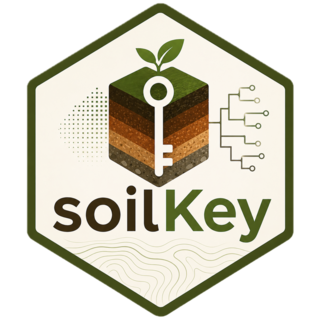

Query WoSIS profiles live from ISRIC
Source:R/wosis-graphql.R
read_wosis_profiles_graphql.RdReads soil profiles straight from ISRIC's WoSIS GraphQL endpoint. Nothing is cached to disk: soilKey distributes no soil observations, and each call is made by you, to ISRIC, under ISRIC's terms.
Usage
read_wosis_profiles_graphql(
country = NULL,
wrb_rsg = NULL,
n_max = 25L,
licence_filter = c("permissive", "any"),
timeout = 30,
max_scan = 300L
)Arguments
- country
Optional country name, e.g.
"Brazil".- wrb_rsg
Optional WRB Reference Soil Group, e.g.
"Ferralsols".- n_max
Maximum profiles to return (default 25, at most 100).
- licence_filter
"permissive"(default) or"any".- timeout
Seconds to wait for each request (default 30).
- max_scan
Most profiles examined per call (default 300).
Value
A data.frame, one row per profile, with profile_id,
profile_code, country, lat, lon,
wrb_rsg, usda_order, dataset, licence,
licence_short, n_layers and depth_cm. Zero rows if
nothing matched. Never throws on a network failure: it returns zero rows
with a "wosis_error" attribute, since an unreachable server is an
expected condition. Attributes "wosis_excluded" and
"wosis_excluded_licences" report what the licence filter withheld,
and "wosis_no_layers" how many profiles had no layers at all.
Licence
WoSIS is licensed per profile as each data provider specified, and
about half of it carries a NonCommercial restriction. licence_filter =
"permissive" (the default) returns only profiles free of that restriction
(CC BY, or public domain); "any" returns everything. Either way the
licence and the source dataset travel with every profile, because CC BY
requires attribution when you reuse the data. Cite the data with
wosis_citation.
Load on ISRIC
The endpoint accepts at most 100 profiles per request, so profiles are read
in pages of 100, in a stable order, and at most max_scan are examined
per call. The number of layers and the depth of each listed profile come
from one light query on the layers table, which lets a caller tell a full
profile from a single topsoil sample before loading it.
See also
wosis_profile_to_pedon to turn a row into a
PedonRecord with its horizons.
Examples
# \donttest{
# Requires network access to ISRIC.
p <- read_wosis_profiles_graphql(country = "Argentina", n_max = 5)
if (nrow(p)) p[, c("profile_code", "wrb_rsg", "n_layers", "licence_short")]
#> profile_code wrb_rsg n_layers licence_short
#> 1 AR SC.P7 Luvisol 4 CC BY 3.0
#> 2 AR SJ.87 Solonchak 1 CC BY 3.0
#> 3 AR RN.C.331 Calcisol 4 CC BY 3.0
#> 4 AR SE.BBAJADA Solonetz 3 CC BY 3.0
#> 5 AR SE.VFIGUEROA Fluvisol 3 CC BY 3.0
# }